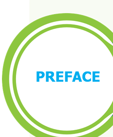
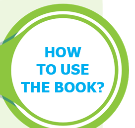

The Science textbook for standard six has been prepared following the guidelines given in the National Curriculum Framework 2005. The book is designed to maintain the paradigm shift from the primary General Science to branches as Physics, Chemistry, Botany and Zoology. The book enables the reader to read the text, comprehend and perform the learning experiences with the help of teacher. The students explore the concepts through activities and by the teacher demonstration. Thus, the book is learner centric with simple activities that can be performed by the students under the supervision of teachers.

The first term VI science book has seven units.
Two units planned for every month including computer science chapter has been introduced.
Each unit comprises of simple activities and experiments that can be done by the teacher through demonstration, if necessary, students can perform them.
Colourful info-graphics and info-bits enhance the visual learning.
Glossary has been introduced to learn scientific terms.
The “Do you know?” box can be used to enrich the knowledge of general science around the world.
ICT Corner and QR code has been introduced in each unit for the first time to enhance digital science skills.
Let’s use the QR code in the text books! How?
Download the QR code scanner from the Google play store or Apple App Store into your Smart phone.
Open the QR code scanner application
Once the scanner button in the application is clicked, camera opens and then bring it closer to the QR code in the text book.
Once the camera detects the QR code, a URL appears in the screen.
Click the URL and go to the content page.